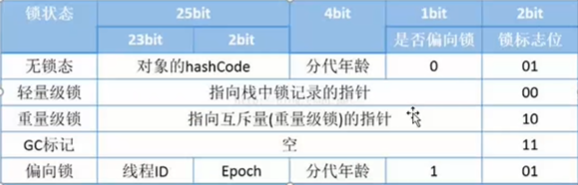

深入理解Java对象原文出处:本文由博客园博主秃桔子提供。
原文连接:https://www.cnblogs.com/godoforange/p/11552287.html
深入理解Java对象(理清关系)
1、对象的创建过程:
所有创建过程如下所示：
- new 类名
- 根据new的参数在常量池中定位一个类的符号引用。
- 如果没有找到这个符号引用，说明类还没有被加载，则进行类的加载、解析和初始化。
- 虚拟机为对象分配内存(位于堆中)
- 将分配的内存初始化为零值(不包括对象头)
- 调用对象的<init>方法(包括代码块和构造方法)
2、如何给对象分配内存
- 1.指针碰撞
- 2.空闲列表
- 系统需要维护一个链表，来维护哪些模块可用，以便分配内存
3、线程安全性问题
4、对象的结构
- Header(对象头)
- 占用内存如下所示

- 自身运行时的数据(Mark Word)
- 哈希值
- GC分代年龄（为了分代收集算法所服务）
- 锁状态标志
- 线程持有锁
- 偏向线程ID
- 偏向时间戳
- 类型指针
- InstanceData(存储对象的有效信息)
- Padding(对齐填充)
5、对象的访问定位
- 使用句柄
- 对象引用指向了一个句柄池，通过句柄池找到对象的真正地址。
- 直接指针(HotSpot虚拟机采用的就是这种方式)
注:不管是直接使用还是直接指针，都需要保存俩个指针，一个到对象实例的指针，另一个是到对象类型数据的指针。